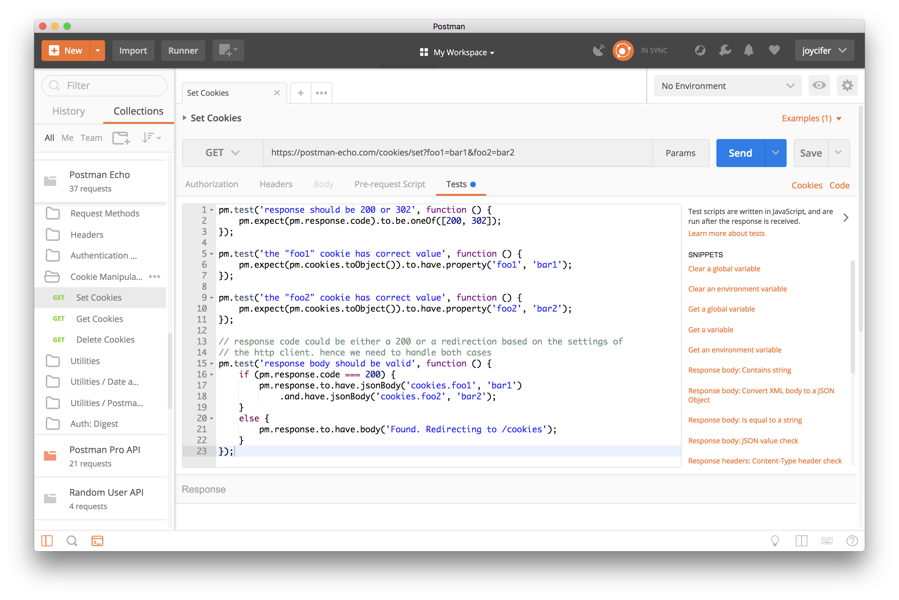
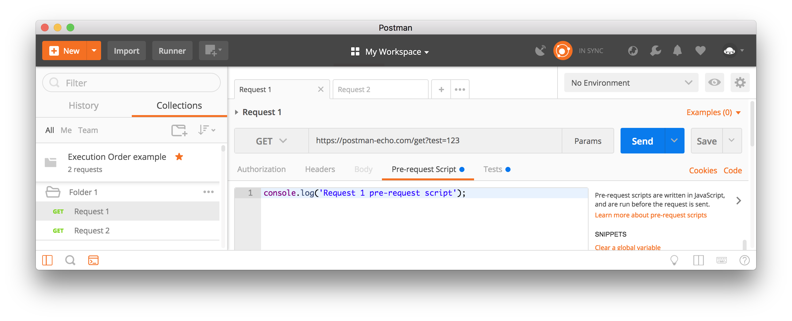
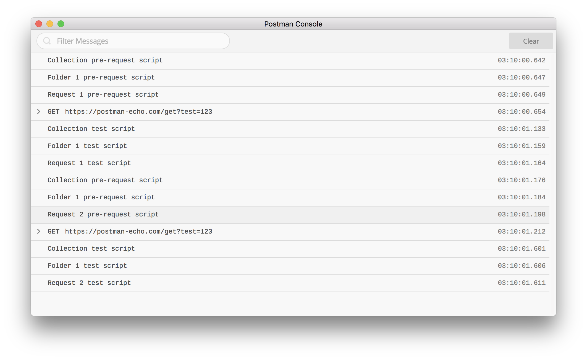

简介
Postman拥有一个基于Node.js的强大运行时机制，该机制允许你动态的向请求和集合中添加操作。 这样的话，
你就可以编写测试套件（测试用例集合），构建包含动态参数的请求，在请求之间传递数据等。 你可以在一条
工作流中的两个事件之间添加可执行的JavaScript代码。
- 写在Pre-request Script下的脚本，将在发送该请求之前执行。
- 写在Tests下的脚本，将在请求完成之后执行。

你可以将pre-request脚本和tests脚本添加到集合，文件夹，集合中的请求或者是单独的请求中。
脚本的执行顺序
在Postman中，单个请求的脚本执行顺序如下所示：
- pre-request脚本在发送请求之前执行
- tests脚本在请求完成之后执行

对于一个集合中的每个请求，脚本将按以下顺序执行：
- 与集合有关联的pre-request脚本将在该集合内的每一个请求之前执行。
- 与文件夹有关联的pre-request脚本将在该文件夹内的每一个请求之前执行。
- 与集合有关联的tests脚本将在该集合内的每一个请求之后执行。
- 与文件夹有关联的tests脚本将在该文件夹内的每一个请求之后执行。

对于集合中的每个请求，脚本将始终根据以下层次结构运行：集合级脚本（如果有），文件夹级脚本（如果有），
请求级脚本（如果有）。 请注意，此执行顺序适用于pre-request脚本和tests脚本。
例如，你有一个集合，该集合下有一个文件夹，文件夹下有两个请求，如下图：

如果你在集合，文件夹和请求的pre-request脚本和tests脚本中添加了日志，你可以在Postman的控制台
中清楚的看到执行顺序。

如何运行
Postman沙盒是一个JavaScript执行环境，你可以在编写请求的pre-request脚本和tests脚本时使用（Postman
和Newman都可以）。你在这些部分中编写的任何代码都将在沙盒中执行。
脚本调试
调试脚本可以在Pre-request Script选项卡或Tests选项卡下编写并在Postman Console中展示相关信息。
题外
由于自己是第一次进行外文文档翻译，受限于英文水平，翻译时会尽力达到“信达雅”，如觉有不妥或难以理解
之处，可查看官方文档。在日后的文档翻译中，相信自己的翻译能力会逐渐提高。